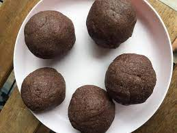
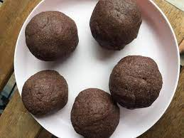

Welcome to Delicious Recipes!
Explore our collection of delightful recipes and get ready to indulge in a world of flavors. You can select the best sri lankan food recipes for your health from here. Stay with us for more recipes.

 



Recipe Catalog
Milk Rice Recipe
Milk Rice is a traditional Sri Lankan dish made from rice. It is prepared by cooking rice with coconut milk, hence this name, and can be considered a form of rice cake or rice pudding. Milk Rice is an essential dish in Sri Lankan cuisine.
Check Recipe
String Hoppers Recipe
String hoppers (idiyappa in Sinhala) are made from a hot-water dough of rice meal or wheat flour. The dough is pressed out in circlets from a string mold onto small wicker mats, and then steamed. This dish is typically not eaten plain and is often paired with a curry, such as Kiri hodi.
Check Recipe
Hoppers Recipe
Hopper pancakes are thin, bowl-shaped pancakes that get their name from the pan that gives them that shape in Sri Lanka. These crunchy bowls naturally beg for a filling of some sort. Chefs crack a full egg over the batter just as it begins to cook and cover the pan.
Check Recipe
Rice and Curry
The central feature of Sri Lankan cuisine is boiled or steamed rice, served with a curry of fish or meat, along with other curries made with vegetables, lentils, or fruits.
Check RecipeContact Us
Have questions or feedback? Feel free to reach out to us.